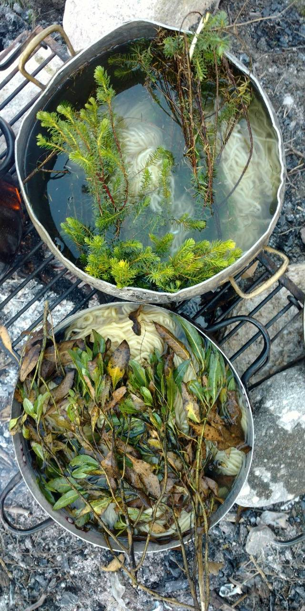
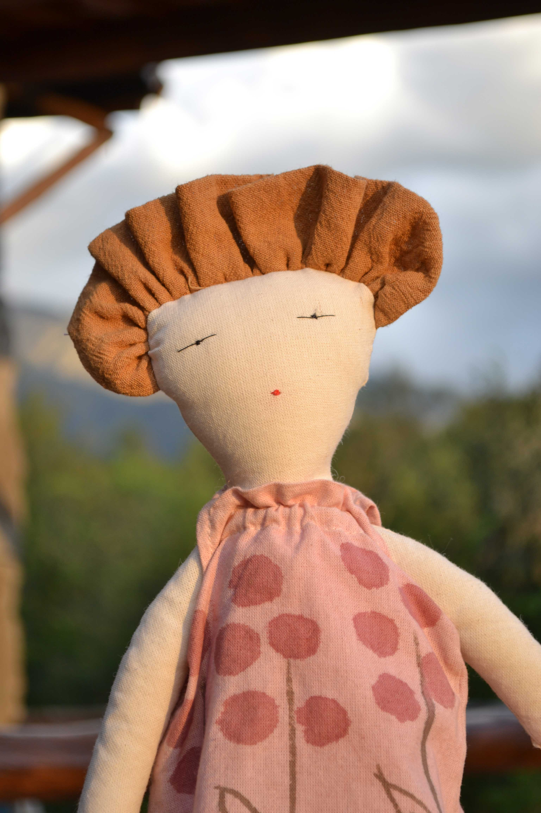
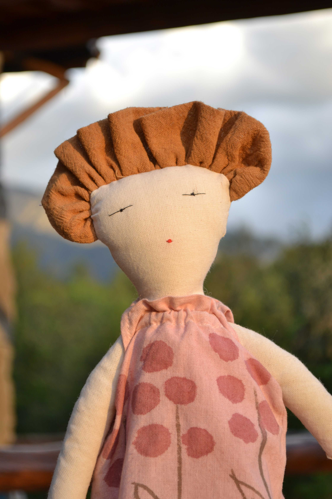

natalia rocca


Conectar con la naturaleza, sus tiempos formas y olores, me ayuda a estar en el presente y a disfrutar de los momentos simples

La infancia como refugio y juego.
Exploro lo lúdico y onírico.

 

Observo la naturaleza con todos los sentidos.
La reinterpreto en formas simples
Capturo sus colores.


Recupero y resignifico botones antiguos en piezas únicas y atemporales.
Pequeños tesoros vintage.